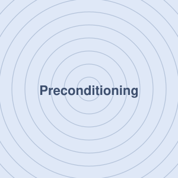
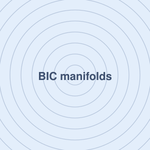
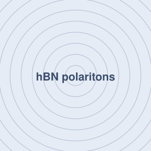

Jaehyun Jeon
Physics & Electrical Engineering · KAIST
I am an undergraduate at KAIST majoring in Physics with a double major in Electrical Engineering. Since 2022 I have worked in the Quantum Nano Optics Lab with Prof. Min Seok Jang, and I am currently a visiting researcher at Stanford with Prof. Jonathan Fan.
My research is in theoretical and computational nanophotonics. I am interested in the mathematical structure behind resonances, modal theories, and optimization: why a design problem is hard, when a model is valid, and how that understanding can be turned into better design tools.
Education
- KAISTB.S. Physics, double major in Electrical Engineering · 2021 – present
- Daegu Science High School2018 – 2021
Research
- Stanford UniversityVisiting researcher, Prof. Jonathan Fan · 2026 – present
- KAISTUndergraduate researcher, Prof. Min Seok Jang · 2022 – present
- Harvard Medical SchoolVisiting researcher, Prof. Brett Bouma · 2025
Honors & Awards
- Undergraduate Visiting Research Program, Stanford University2026
- Outstanding Individual Research Student, KAIST2024 – 2025
- MIT–Harvard Summer Institute in Biomedical Optics2025
- KAIST International Research Participation Fellowship2025
- Excellence in Poster Presentation Award2025
- KAIST–MIT Quantum Winter School2025
- Academic Excellence Scholarship · Second-highest rank in the Department of Physics2024
- Dean’s List, KAIST2024
- Highest Honor, Korean Physics Olympiad (general physics track)High school
Research

Preconditioning Dynamics of Resonant Inverse Design
Ongoing research
Stanford University · Fan Group · 2026
High-Q resonant inverse design is notoriously ill-conditioned. Using temporal coupled-mode theory, I reduce the optimization to a two-dimensional physical state that separates resonance detuning from useful enhancement, and show that the familiar O(Q²) stiffness is not intrinsic to the objective but is introduced by the design parameterization. The reduced dynamics have an exact phase structure, which explains why reparameterization, not learning-rate tuning, is the right lever.

Bound States in the Continuum in High-Dimensional Shape Space
Paper in preparation · co-first author
Stanford University · Fan Group · 2026 – present
I derive how the Q factor of a quasi-BIC scales along an arbitrary path through geometry space: the exponent is set by the order of contact between the path and the radiation-zero set, giving Q ∼ |δ|−2μ. Using this law as a search criterion, I locate symmetry-unprotected accidental BICs and show that exact BICs form connected constraint manifolds in high-dimensional shape space, which can be navigated to tune near-field superchirality while staying bound.

Selective Excitation of Higher-Order Hyperbolic Phonon-Polaritonic Modes
Paper in preparation · co-first author
KAIST · Quantum Nano Optics Lab
I develop an analytic mode-matching framework, based on the transfer-matrix method, that captures conversion among image-polariton, phonon-polariton, and radiation modes at metal discontinuities. Combined with an adjoint optimization framework I built on the COMSOL API, I inverse-design an Au grating beneath hBN that selectively excites a desired higher-order hyperbolic phonon-polariton mode, and am validating the design with SNOM experiments.